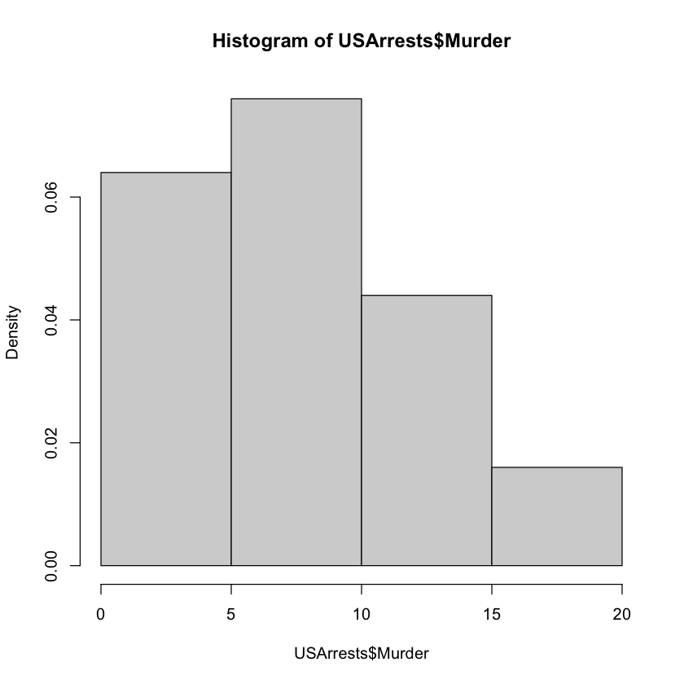

01 - Chapter 1
Getting Started
We have seen most of the material below before. The examples below will provide good practice. Having written that, there are quite a number of new commands/ideas, as well.
Example 1
The purpose of this example is to get familiar how to create a vector using the combine c() function.
Once you have a vector, arithmetic operations can be run using very simple syntax.
You can make vectors algebraically interact with scalars (i.e. numbers) or with other vectors of same length (termwise).
# create a vector and assign a variable.
temps = c(51.9, 51.8, 51.9, 53)
# subtract 32 from every item in the vector temps, and multiply the differences by 5/9,
# that's the conversion formula from fahrenheit to celcius.
(5/9) * (temps - 32)
# create another vector.
CT = c(48, 48.2, 48, 48.7)
# when you subtract a vector from another, R runs the subtraction termwise.
temps - CT
- 11.0555555555556
- 11
- 11.0555555555556
- 11.6666666666667
- 3.9
- 3.59999999999999
- 3.9
- 4.3
Example 2
In this example, we practice indexing and slicing.
By provoding the desired indices, we can grab the items at those indices of a vector.
If we want to grab several items at once, the : operator comes very handy to generate a sequence of indices.
The two new functions you may want to learn about would be the table() and barplot() functions.
table() is used to create a frequency table.
more on table(): https://www.statology.org/table-function-in-r/
more on barplot(): https://statisticsglobe.com/barplot-in-r
# create two vectors from given data.
winner = c(185, 182, 182, 188, 188, 188, 185, 185, 177, 182, 182, 193, 183, 179, 179, 175)
opponent = c(175, 193, 185, 187, 188, 173, 180, 177, 183, 185, 180, 180, 182, 178, 178, 173)
# you can see the lengths of the vectors in the environment pane of RStudio,
# but you may want to compute with that length.
# the `length()` function can be used to in those cases.
length(winner)
# `seq()` function is used to created a vector whose first item is 2008, last item 1948,
# and the each item is 4 less than the previous item (i.e. the stepsize of the arithmetic sequence is -4)
year = seq(from=2008, to=1948, by=-4)
# grabbing the 4th item in the vector `winner`,
# and updating that item with the value 189.
winner[4] = 189
# grabbing the 5th item in the vector in `winner`,
# and updating that item as 189.
winner[5] = 189
# instead of the previous two commands,
# we can grab the 4th and 5th items and update them with 189.
winner[4:5] = 189
# the function `mean()` computes the mean (i.e. average) of a numerical vector.
mean(winner)
# the average of the `opponent` vector is computed.
mean(opponent)
# like in example 1, we can compute the difference of vectors (of same length),
# that produces of a new vector whose items are the differences of the corresponding values in the given vectors.
difference = winner - opponent
# we create a data frame from the vectors `year`, `winner`, `opponent` and `difference`
# those vectors will be columns of the data frame in the same order of the arguments of the function `data.frame()`
data.frame(year, winner, opponent, difference)
# the one below is a tricky line:
# `winner > opponent` asks for every index of the vectors, if the item of `winner` vector is greater than
# the correspondent item in the `opponent` vector.
# the result of each of those comparisons is `TRUE` or `FALSE`.
# hence `winner > opponent` creates a logical vector.
# then that logical vector is assigned the variable name `taller.won`
taller.won = winner > opponent
# the `TRUE` and `FALSE`s are counted in the `taller.won` vector
# the number of `TRUE`s is the the number of the elected president being taller than the other candidate.
table(taller.won)
# you can create the relative frequency (in percent) table by dividing each frequency by the total frequency
# and multiplying by 100.
table(taller.won) / 16 * 100
# finally a barplot is constructed.
# one minor thing below: we want the values in the horizontal axis to increase as we move to right,
# whereas our vectors constructed with election years in decreasing order.
# 'rev(difference)' reverses the `difference` vector.
# `barplot(rev(difference))` puts a bar at every index of the `rev(difference)` vector as tall as the value at that index.
# `xlab` and `ylab` arguments of the `barplot()` function allow us name the x (horizontal) and y (vertical) axes.
barplot(rev(difference), xlab="Election years 1948 to 2008", ylab="Height difference in cm")
# note that the bars are not labed horizontally,
# if you want horizontal labels, you can do the following:
barplot(rev(difference), names.arg = rev(year), xlab="Election years 1948 to 2008", ylab="Height difference in cm")
# depending on the size of the barplot, some horizontal labels can be skipped as R doesn't want the labels to overlap.
# you can also easily draw a scatterplot for the pair of variables: `winner` and `opponent`
# for every election, a point is generated whose x coordinate is the winner and y coordinate is the opponent.
plot(winner,opponent)
16
183.4375
181.0625
| year | winner | opponent | difference |
|---|---|---|---|
| <dbl> | <dbl> | <dbl> | <dbl> |
| 2008 | 185 | 175 | 10 |
| 2004 | 182 | 193 | -11 |
| 2000 | 182 | 185 | -3 |
| 1996 | 189 | 187 | 2 |
| 1992 | 189 | 188 | 1 |
| 1988 | 188 | 173 | 15 |
| 1984 | 185 | 180 | 5 |
| 1980 | 185 | 177 | 8 |
| 1976 | 177 | 183 | -6 |
| 1972 | 182 | 185 | -3 |
| 1968 | 182 | 180 | 2 |
| 1964 | 193 | 180 | 13 |
| 1960 | 183 | 182 | 1 |
| 1956 | 179 | 178 | 1 |
| 1952 | 179 | 178 | 1 |
| 1948 | 175 | 173 | 2 |
taller.won
FALSE TRUE
4 12
taller.won
FALSE TRUE
25 75
Example 3
In this example, deaths of Prussian soldiers due to horsekicks are studied (I know, we may not be the target audience.)
Towards the end of the example, our data is compared to Poisson distribution, which models the probability of a given number of events occurring in a fixed interval of time, like what's the probability that your name is called a fixed number of times during a lecture. To learn more about Poisson distributions, you can take a look at the wikipedia page https://en.wikipedia.org/wiki/Poisson_distribution or these notes for a somewhat intuitive description.
# first, the data is stored.
# `k` stores the number of deaths
# `x` stores the frequencies of the values in `k`.
k = c(0, 1, 2, 3, 4)
x = c(109, 65, 22, 3, 1)
# first, we draw a barplot
# remember that the first argument denotes the heights of the bars.
# and that the `names.arg` argument in the `barplot` function allows us to specify our horizontal labels.
#
barplot(x, names.arg = k, ylab="Frequencies", xlab = 'Number of deaths', main = 'Frequency distribution')
# to get the relative frequency barplot, we simply divide the frequencies by the total frequency.
# and produce a new bar plot using those heights (the name `p` stands for percentage, i suppose.)
p = x / sum(x)
barplot(p, names.arg=k, ylab='Relative Frequencies', xlab = 'Number of deaths', main = 'Relative Freq Distr')
# remember that the mean is a weighted sum of relative frequencies, as we discussed in class
# the way the sample mean `r` is computed below is as follows:
# `p * k` computes the product of each horizontal value with the height of the corresponding bar.
# then those little products are added. that way the sample mean is calculated.
r = sum(p * k)
# you can think of the variance as the square of the average error of a horizontal value from the mean.
# i'll talk more about the variance and standard deviation in the class.
v = sum(x * (k - r)^2) / 199
You may find the rest of the example a bit confusing. What's done below is:
- First, using our sample mean, the probabilities are modeled using a Poisson distribution.
Why Poisson?
"How many deaths per year" is the kind of thing Poisson distributions model well.
Also, Poisson distributions' mean equals their variance, and our sample mean and sample variance are pretty close, which can be taken as further evidence for using Poisson distributions to model our data.
# model the theoretical probabilities using a Poisson distribution whose mean equals to our sample mean.
# f denotes the relative frequencies (i.e. probabilities).
f = r^k * exp(- r) / factorial(k)
f
- 0.5433508690745
- 0.331444030135445
- 0.101090429191311
- 0.0205550539355665
- 0.00313464572517389
- We can generate the Poisson distribution above using a built-in function of
R.
f = dpois(k, r)
f
- 0.5433508690745
- 0.331444030135445
- 0.101090429191311
- 0.0205550539355665
- 0.00313464572517389
- Then we multiply those theoretical relative frequencies generated by the Poisson distribution by 200 (our total frequency) and round the results down to get integer (theoretical) frequencies.
floor(200*f)
- 108
- 66
- 20
- 4
- 0
- Remember our actual frequencies:
x
- 109
- 65
- 22
- 3
- 1
Note that our frequencies are pretty close to the theoretical frequencies of Poisson distribution with a mean that equals our sample mean, and when the sample size is 200 like ours.
- Lastly, we combine the vectors
k(labels),p(our actual relative frequencies) andf(the theoretical relative frequencies) to see how good our sample data can be modeled by a Poission distribution.
This is similar to the comparison of theoretical and our frequencies we did above, except at the relative frequency level.
cbind(k, p, f)
| k | p | f |
|---|---|---|
| 0 | 0.545 | 0.543350869 |
| 1 | 0.325 | 0.331444030 |
| 2 | 0.110 | 0.101090429 |
| 3 | 0.015 | 0.020555054 |
| 4 | 0.005 | 0.003134646 |
Example 4
The purpose of this example is to get familiar with using code snippets in R.
One important takeaway from this example is to learn how to use R scripts in RStudio.
If you choose File > New File > R Script in RStudio's top menu and paste
the following code snippet (a code snippet is a programming term that refers to a small portion of re-usable source code) into the pane on upper left corner and click the Source key, RStudio will run all the lines you pasted.
You can save those code snippets in your hard-drive for future use. A good practice is to have a particular directory on your hard drive for those scripts, you name those files in a descriptive way when saving, you use the extension .R. Example: horsekicks.r
One remark: When you want a variable to be displayed on console, you'll need to specify that you want it to be printed by using the print() function in your script. If you want to read more about the print() function: https://riptutorial.com/r/example/1221/printing-and-displaying-strings
# Prussian horsekick data
# rpois() generates random values according to the Poisson distribution and creates an artificially simulated sample.
# we take the mean = .61 like in example 3, and sample size = 200.
y = rpois(200, lambda=.61)
# create a table of sample frequencies.
kicks = table(y)
# create a table of sample relative frequencies.
sample = kicks / 200
# display the table of sample relative frequencies.
print(sample)
# create a theoretical relative distribution according to Poisson distribution with mean = 0.61
theoretical = dpois(0:3, lambda=.61)
# display the theoretical relative frequencies.
print(theoretical)
# combine the theoretical and sample relative frequencies in a table:
cbind(theoretical, Sample)
# print the table
print(cbind(theoretical, Sample))
y
0 1 2 3 4
0.525 0.320 0.130 0.020 0.005
[1] 0.54335087 0.33144403 0.10109043 0.02055505
| theoretical | Sample | |
|---|---|---|
| 0 | 0.54335087 | 0.515 |
| 1 | 0.33144403 | 0.330 |
| 2 | 0.10109043 | 0.135 |
| 3 | 0.02055505 | 0.020 |
theoretical Sample
0 0.54335087 0.515
1 0.33144403 0.330
2 0.10109043 0.135
3 0.02055505 0.020
One interesting remark is that the actual data in example 3 fits the theoretical Poisson distribution better than the simulated data in example 4.
The R Help System
# to ask about a function/keyword.
?barplot
# alternative way to ask about a function/keyword.
help(barplot)
# searches through the help documentation for the keyword and finds all the documentations that contain the keyword.
??dpois
# searches through the help documentation for the keyword and finds all the documentations that contain the keyword.
help.search("dpois")
# to get an example of how to use a function.
example(mean)
mean> x <- c(0:10, 50)
mean> xm <- mean(x)
mean> c(xm, mean(x, trim = 0.10))
[1] 8.75 5.50
# usually, there is an example at the end of the help file, as well.
?mean
Functions
Example 5
In this example, defining and using a function are illustrated.
We have discussed what functions are and how to define a function (the syntax of defining functions) last week.
# defining the function whose name will be var.n
# and which computes the sample variance of a vector of numbers.
var.n = function(x){
v = var(x)
n = NROW(x)
v * (n - 1) / n
}
# using the function.
temps = c(51.9, 51.8, 51.9, 53)
var(temps)
var.n(temps)
0.323333333333334
0.242500000000001
Example 6
Omitted, because we don't need to discuss integration (a calculus operation) at this point.
Example 7
The (R) function curve() which draws the graph of the (mathematical & R) function in its argument.
# remark: if the definition is one line { } are not needed.
f = function(x, a=1, b=1)
x^(a-1) * (1-x)^(b-1)
# graphing a function from real numbers to real numbers.
# remark: the function to be graphed should always be defined in terms of x.
curve(f(x,2,5), from=0, to=1)
# if you like, you can label the x and y axes.
curve(f(x,2,5), from=0, to=1, xlab="inputs", ylab='outputs')
Vectors and Matrices
Example 8
Below, we create a matrix that represents the class mobility of generations. The entry $P_{ij}$ (namely, the entry in row $i$, column $j$) represents the probability the child being in the class represented by column $j$, if the parents are in row $i$.
# creating a matrix from given data.
probs = c(.45, .05, .01, .48, .70, .50, .07, .25, .49)
P = matrix(probs, nrow=3, ncol=3)
P
# naming rows and columns.
rownames(P) <- c("lower_old", "middle_old", "upper_old")
colnames(P) <- c("lower_new", "middle_new", "upper_new")
P
# how to obtain row sums.
rowSums(P)
# how to obtain column sums.
colSums(P)
# grabbing the entry in row 1, column 3
P[1, 3]
# grabbing the whole row 1
P[1, ]
# grabbing the whole column 2
P[ ,2]
| 0.45 | 0.48 | 0.07 |
| 0.05 | 0.70 | 0.25 |
| 0.01 | 0.50 | 0.49 |
| lower_new | middle_new | upper_new | |
|---|---|---|---|
| lower_old | 0.45 | 0.48 | 0.07 |
| middle_old | 0.05 | 0.70 | 0.25 |
| upper_old | 0.01 | 0.50 | 0.49 |
- lower_old
- 1
- middle_old
- 1
- upper_old
- 1
- lower_new
- 0.51
- middle_new
- 1.68
- upper_new
- 0.81
0.07
- lower_new
- 0.45
- middle_new
- 0.48
- upper_new
- 0.07
- lower_old
- 0.48
- middle_old
- 0.7
- upper_old
- 0.5
# it's probably easier to define a matrix using the following command,
# instead of typing two lines as above example.
# `byrow=TRUE` argument guarantees that the numbers are placed in rows
# and once sufficiently many numbers are placed,
# the next number is placed as the first entry in the row below.
Q = matrix(c( 0.45, 0.48, 0.07,
0.05, 0.70, 0.25,
0.01, 0.50, 0.49), nrow=3, ncol=3, byrow=TRUE)
Q
| 0.45 | 0.48 | 0.07 |
| 0.05 | 0.70 | 0.25 |
| 0.01 | 0.50 | 0.49 |
It's easy to do matrix operations in R.
We probably won't need those operations, in case we do, I can go over basic matrix operations. But, here's the list anyways:
(Ignore the operations that doesn't make sense to you.)
# elementwise multiplication
P * Q
# exponentiating elementwise
P^2
# matrix multiplication
P %*% Q
# inverse matrix
solve(P)
| lower_new | middle_new | upper_new | |
|---|---|---|---|
| lower_old | 0.2025 | 0.2304 | 0.0049 |
| middle_old | 0.0025 | 0.4900 | 0.0625 |
| upper_old | 0.0001 | 0.2500 | 0.2401 |
| lower_new | middle_new | upper_new | |
|---|---|---|---|
| lower_old | 0.2025 | 0.2304 | 0.0049 |
| middle_old | 0.0025 | 0.4900 | 0.0625 |
| upper_old | 0.0001 | 0.2500 | 0.2401 |
| lower_old | 0.2272 | 0.5870 | 0.1858 |
|---|---|---|---|
| middle_old | 0.0600 | 0.6390 | 0.3010 |
| upper_old | 0.0344 | 0.5998 | 0.3658 |
| lower_old | middle_old | upper_old | |
|---|---|---|---|
| lower_new | 2.4549550 | -2.254505 | 0.7995495 |
| middle_new | -0.2477477 | 2.475225 | -1.2274775 |
| upper_new | 0.2027027 | -2.479730 | 3.2770270 |
Data Frames
Data frames are different from the matrices. The data type of entries of a matrix are all the same. You can think of a matrix as a 2D vector.
On the other hand, a data frame consists of vertical vectors. Namely, each item in the same column has the same data type, but items in different columns don't have to have the same data type.
It's like stacking vertical vectors horizontally.
Example 9
In this example, the purpose is to learn different ways of displaying a data frame and getting summary information of a data frame.
# displaying all data
USArrests
| Murder | Assault | UrbanPop | Rape | |
|---|---|---|---|---|
| <dbl> | <int> | <int> | <dbl> | |
| Alabama | 13.2 | 236 | 58 | 21.2 |
| Alaska | 10.0 | 263 | 48 | 44.5 |
| Arizona | 8.1 | 294 | 80 | 31.0 |
| Arkansas | 8.8 | 190 | 50 | 19.5 |
| California | 9.0 | 276 | 91 | 40.6 |
| Colorado | 7.9 | 204 | 78 | 38.7 |
| Connecticut | 3.3 | 110 | 77 | 11.1 |
| Delaware | 5.9 | 238 | 72 | 15.8 |
| Florida | 15.4 | 335 | 80 | 31.9 |
| Georgia | 17.4 | 211 | 60 | 25.8 |
| Hawaii | 5.3 | 46 | 83 | 20.2 |
| Idaho | 2.6 | 120 | 54 | 14.2 |
| Illinois | 10.4 | 249 | 83 | 24.0 |
| Indiana | 7.2 | 113 | 65 | 21.0 |
| Iowa | 2.2 | 56 | 57 | 11.3 |
| Kansas | 6.0 | 115 | 66 | 18.0 |
| Kentucky | 9.7 | 109 | 52 | 16.3 |
| Louisiana | 15.4 | 249 | 66 | 22.2 |
| Maine | 2.1 | 83 | 51 | 7.8 |
| Maryland | 11.3 | 300 | 67 | 27.8 |
| Massachusetts | 4.4 | 149 | 85 | 16.3 |
| Michigan | 12.1 | 255 | 74 | 35.1 |
| Minnesota | 2.7 | 72 | 66 | 14.9 |
| Mississippi | 16.1 | 259 | 44 | 17.1 |
| Missouri | 9.0 | 178 | 70 | 28.2 |
| Montana | 6.0 | 109 | 53 | 16.4 |
| Nebraska | 4.3 | 102 | 62 | 16.5 |
| Nevada | 12.2 | 252 | 81 | 46.0 |
| New Hampshire | 2.1 | 57 | 56 | 9.5 |
| New Jersey | 7.4 | 159 | 89 | 18.8 |
| New Mexico | 11.4 | 285 | 70 | 32.1 |
| New York | 11.1 | 254 | 86 | 26.1 |
| North Carolina | 13.0 | 337 | 45 | 16.1 |
| North Dakota | 0.8 | 45 | 44 | 7.3 |
| Ohio | 7.3 | 120 | 75 | 21.4 |
| Oklahoma | 6.6 | 151 | 68 | 20.0 |
| Oregon | 4.9 | 159 | 67 | 29.3 |
| Pennsylvania | 6.3 | 106 | 72 | 14.9 |
| Rhode Island | 3.4 | 174 | 87 | 8.3 |
| South Carolina | 14.4 | 279 | 48 | 22.5 |
| South Dakota | 3.8 | 86 | 45 | 12.8 |
| Tennessee | 13.2 | 188 | 59 | 26.9 |
| Texas | 12.7 | 201 | 80 | 25.5 |
| Utah | 3.2 | 120 | 80 | 22.9 |
| Vermont | 2.2 | 48 | 32 | 11.2 |
| Virginia | 8.5 | 156 | 63 | 20.7 |
| Washington | 4.0 | 145 | 73 | 26.2 |
| West Virginia | 5.7 | 81 | 39 | 9.3 |
| Wisconsin | 2.6 | 53 | 66 | 10.8 |
| Wyoming | 6.8 | 161 | 60 | 15.6 |
# sometimes (and by sometimes i mean almost always)
# there is too much data to display,
# in those cases, displaying few top or bottom rows
# is a good idea to see what kind of data we have.
head(USArrests)
# if you want to see more rows from top, you can specify that.
head(USArrests, 14)
# similarly, you can display few bottom rows, as well,
# using the `tail()` function.
tail(USArrests)
| Murder | Assault | UrbanPop | Rape | |
|---|---|---|---|---|
| <dbl> | <int> | <int> | <dbl> | |
| Alabama | 13.2 | 236 | 58 | 21.2 |
| Alaska | 10.0 | 263 | 48 | 44.5 |
| Arizona | 8.1 | 294 | 80 | 31.0 |
| Arkansas | 8.8 | 190 | 50 | 19.5 |
| California | 9.0 | 276 | 91 | 40.6 |
| Colorado | 7.9 | 204 | 78 | 38.7 |
| Murder | Assault | UrbanPop | Rape | |
|---|---|---|---|---|
| <dbl> | <int> | <int> | <dbl> | |
| Alabama | 13.2 | 236 | 58 | 21.2 |
| Alaska | 10.0 | 263 | 48 | 44.5 |
| Arizona | 8.1 | 294 | 80 | 31.0 |
| Arkansas | 8.8 | 190 | 50 | 19.5 |
| California | 9.0 | 276 | 91 | 40.6 |
| Colorado | 7.9 | 204 | 78 | 38.7 |
| Connecticut | 3.3 | 110 | 77 | 11.1 |
| Delaware | 5.9 | 238 | 72 | 15.8 |
| Florida | 15.4 | 335 | 80 | 31.9 |
| Georgia | 17.4 | 211 | 60 | 25.8 |
| Hawaii | 5.3 | 46 | 83 | 20.2 |
| Idaho | 2.6 | 120 | 54 | 14.2 |
| Illinois | 10.4 | 249 | 83 | 24.0 |
| Indiana | 7.2 | 113 | 65 | 21.0 |
| Murder | Assault | UrbanPop | Rape | |
|---|---|---|---|---|
| <dbl> | <int> | <int> | <dbl> | |
| Vermont | 2.2 | 48 | 32 | 11.2 |
| Virginia | 8.5 | 156 | 63 | 20.7 |
| Washington | 4.0 | 145 | 73 | 26.2 |
| West Virginia | 5.7 | 81 | 39 | 9.3 |
| Wisconsin | 2.6 | 53 | 66 | 10.8 |
| Wyoming | 6.8 | 161 | 60 | 15.6 |
Since we're using RStudio, we can see the information below easily. In case, we want to display those information in the console or compute with them, this is how it's done:
## size/summary of data
# str short for structure
# if you prefer to work with matrices:
arrests = as.matrix(USArrests)
str(arrests)
num [1:50, 1:4] 13.2 10 8.1 8.8 9 7.9 3.3 5.9 15.4 17.4 ...
- attr(*, "dimnames")=List of 2
..$ : chr [1:50] "Alabama" "Alaska" "Arizona" "Arkansas" ...
..$ : chr [1:4] "Murder" "Assault" "UrbanPop" "Rape"
Example 10
Summary statistics and basic visualization.
summary(USArrests)
Murder Assault UrbanPop Rape
Min. : 0.800 Min. : 45.0 Min. :32.00 Min. : 7.30
1st Qu.: 4.075 1st Qu.:109.0 1st Qu.:54.50 1st Qu.:15.07
Median : 7.250 Median :159.0 Median :66.00 Median :20.10
Mean : 7.788 Mean :170.8 Mean :65.54 Mean :21.23
3rd Qu.:11.250 3rd Qu.:249.0 3rd Qu.:77.75 3rd Qu.:26.18
Max. :17.400 Max. :337.0 Max. :91.00 Max. :46.00
# extracting data
USArrests["California", "Murder"]
USArrests["California", ]
USArrests[, "Murder"]
USArrests$Murder
9
| Murder | Assault | UrbanPop | Rape | |
|---|---|---|---|---|
| <dbl> | <int> | <int> | <dbl> | |
| California | 9 | 276 | 91 | 40.6 |
- 13.2
- 10
- 8.1
- 8.8
- 9
- 7.9
- 3.3
- 5.9
- 15.4
- 17.4
- 5.3
- 2.6
- 10.4
- 7.2
- 2.2
- 6
- 9.7
- 15.4
- 2.1
- 11.3
- 4.4
- 12.1
- 2.7
- 16.1
- 9
- 6
- 4.3
- 12.2
- 2.1
- 7.4
- 11.4
- 11.1
- 13
- 0.8
- 7.3
- 6.6
- 4.9
- 6.3
- 3.4
- 14.4
- 3.8
- 13.2
- 12.7
- 3.2
- 2.2
- 8.5
- 4
- 5.7
- 2.6
- 6.8
- 13.2
- 10
- 8.1
- 8.8
- 9
- 7.9
- 3.3
- 5.9
- 15.4
- 17.4
- 5.3
- 2.6
- 10.4
- 7.2
- 2.2
- 6
- 9.7
- 15.4
- 2.1
- 11.3
- 4.4
- 12.1
- 2.7
- 16.1
- 9
- 6
- 4.3
- 12.2
- 2.1
- 7.4
- 11.4
- 11.1
- 13
- 0.8
- 7.3
- 6.6
- 4.9
- 6.3
- 3.4
- 14.4
- 3.8
- 13.2
- 12.7
- 3.2
- 2.2
- 8.5
- 4
- 5.7
- 2.6
- 6.8
# to create a frequency histogram
hist(USArrests[, "Murder"])
hist(USArrests$Murder)
# to create a probability (relative frequency) histogram
library(MASS)
truehist(USArrests$Murder)
hist(USArrests$Murder, prob=TRUE, breaks="scott")

USArrests$Murder
- 13.2
- 10
- 8.1
- 8.8
- 9
- 7.9
- 3.3
- 5.9
- 15.4
- 17.4
- 5.3
- 2.6
- 10.4
- 7.2
- 2.2
- 6
- 9.7
- 15.4
- 2.1
- 11.3
- 4.4
- 12.1
- 2.7
- 16.1
- 9
- 6
- 4.3
- 12.2
- 2.1
- 7.4
- 11.4
- 11.1
- 13
- 0.8
- 7.3
- 6.6
- 4.9
- 6.3
- 3.4
- 14.4
- 3.8
- 13.2
- 12.7
- 3.2
- 2.2
- 8.5
- 4
- 5.7
- 2.6
- 6.8
Attaching a data frame
# to save time, sometimes we attach a data frame so that we can use the
# row/column names directly without the need of slicing or $ sign.
attach(USArrests)
# then we can call Murder instead of USArrests$Murder
murder.pct = 100 * Murder / (Murder + Assault + Rape)
# to detach
detach(USArrests)
Scatterplots and correlations
attach(USArrests)
plot(UrbanPop, Murder)
pairs(USArrests)
cor(UrbanPop, Murder)
0.0695726217359934
cor(USArrests)
| Murder | Assault | UrbanPop | Rape | |
|---|---|---|---|---|
| Murder | 1.00000000 | 0.8018733 | 0.06957262 | 0.5635788 |
| Assault | 0.80187331 | 1.0000000 | 0.25887170 | 0.6652412 |
| UrbanPop | 0.06957262 | 0.2588717 | 1.00000000 | 0.4113412 |
| Rape | 0.56357883 | 0.6652412 | 0.41134124 | 1.0000000 |
Importing Data
You can following tutorial for more detail: http://www.r-tutor.com/r-introduction/data-frame/data-import
However, a quick way to import a csv file as a data frame in RStudio is as follows:
1. Download and know where the csv file is.
2. Use the read.csv() function, and put file.choose() as an argument. RStudio will open a window that will let you find the file you want to import.
If your csv file has headers, then please also put the argument header=T into the read.csv() function.
data <- read.csv(file.choose(), header=T)
The most common error is you obtain only one column. The reason is usually that you didn't choose the correct delimiter (what character seperates the values in a row).
By looking at the data frame, you can find out what delimiter was to be used. The common choices are:
- ',' (comma)
- ';' (semicolon)
- '\t' (tab)
# to import a csv file with header, where the values in a row are seperated by tab:
data = read.csv(file.choose(), sep='\t', header = T)